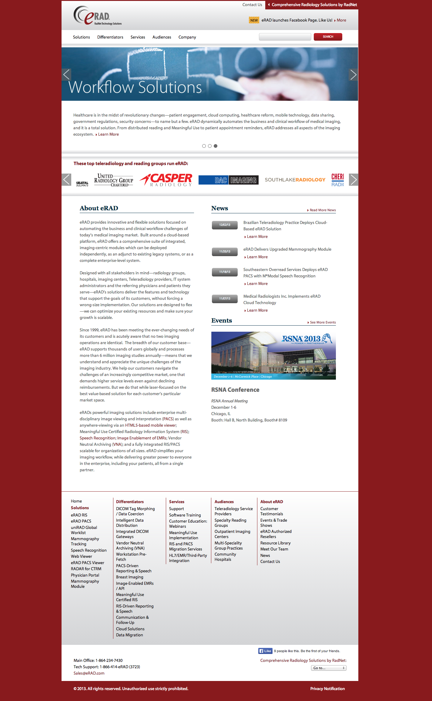

General Dynamics
Josh Aronoff Portfolio Presentation
Email me at: Josh Aronoff / @jaronoff
Phone: 412-613-2500
What I'm going to talk about
- Who I am and what I'm about.
- My ever evolving design process.
- Some of my previous work, experiences, obstacles and solutions.
- Questions? From you... from me
Who I am and What I'm about.
- A designer for 10+ years. I fell into User Experience about 5 years ago.
- Attended the LUMA Institute 2 Day workshop on design thinking.
- Always learning new things. (programming)
- Love technology. (podcasting)
- Love people and designing things for users.
- Love solving problems and coming up with solutions collaboratively.

Highmark BCBS Medicare Site Redesign
Highmark BCBS Medicare Site Redesign
Obstacles
- Needed to be tested in about 2 weeks.
- Was a complete redesign.
- Had to be CMS (Centers for Medicare and Medicaid Services) approved
- Had complex rules that were confusing to the user.
Solution
- Break apart the information and reorganize.
- Move interactions to be more relevant in the site. example: Not pick a county right at page load.
- We had to work iteratively. Test what we can in the short amount of time.
- Had to be open to change. Testing could affect everything.
- Completed Redesign for testing in 2 weeks using Fireworks and libraries of created symbols.
Problem
Highmark BCBS has lots of uses cases. They create lots of documentation for regulatory reasons and at times that can stimy development.
Highmark BCBS Help Tip Design Pattern

Highmark BCBS Help Tip Design Pattern

Highmark BCBS Help Tip Design Pattern

Obstacles
- We started to use more complex interactions, but they weren't specific to specific use cases.
- Needed something that lived "above" use cases or stories.
- Needed to explain these interactions and get buy-in from the business.
Solution
- Create small PDFs that acted as "educational material" that could be passed out to anyone.
- Make them standardized, so that you could give several of them and people could understand lots of information in a short amount of time.
- Define "What", "Where", "How" and "Where else" on the internet to foster buy-in.
Sometimes I write out what features are required.
I start with sketching at times.
Golfing App Wireframe

Golfing App Wireframe

Highmark Search App
Process
I took the data elements that were needed from each search directory and combined the ones that were similar. Since it was going on mobile, I wanted it to be quick to use.
Highmark Search A Hospital
Process
I wanted the user to get to the information in 2 or 3 clicks.

Highmark Search A Retail Clinic
Highmark Find a Doctor
Exceptions
Some of these screens, still had to map back to their original data, and the longer process couldn't be avoided.
Highmark Find a Doctor
Process
I take lots of notes. I record everything.
I use those when I'm designing.
At times I do paper prototyping...
To share with developers before I do any testing.
Lately I've been using InVision app for small tests.
I think moving forward I'm going to try and use screensharing software and phone calls, to be able to run tests remotely.
CDL Warrior Dashboard
CDL Warrior Dashboard Panel Open
CDL Warrior Dashboard Chat
Problem
eRAD needs to create a responsive marketing website that was within brand and easy to update.

eRAD.com Sitemap
eRAD.com Responsive Website

It needed to be able to be updated easily.
eRAD.com Global Header

eRAD.com needed to reflect the new brand.

eRAD.com Navigation
eRAD.com Navigation

eRAD.com Navigation
eRAD.com Home Desktop
Needed to showcase customer base.
eRAD.com Home Tablet

eRAD.com Home Mobile

eRAD.com Under the Hood

eRAD.com Unirad Resources

eRAD.com Unirad Contact Form
Obstacles
- eRAD.com needed to reflect the new brand.
- It needed to be able to be updated easily.
- Needed to showcase customer base.
- Needed to be used by sales as a lead generation tool.
- Was mandated that it had to be responsive.
- Needed to address multiple audiences.
What I would have done differently
- Started with mobile first, it really affected line length.
- Handled navigation differently on mobile, vs. tablet and tested it earlier.
- Started development prior to going so far in static screens, to avoid any issues that couldn't be fixed.
- Not gotten sign-off on the entire project before developing, and starting with mobile first.
Contextual Enquiry for NoWait
Recorded video and ran a qualitative test in 5 different restaurants.
Recorded main navigation issues and other potential issues.
Took copious amounts of notes.
Created 5 reports with findings and 1 large recommendations report.
What I would have done differently.
- I would have transcribed the videos immediately and then went back and filled in my notes with that. It was quicker to do.
- I would have also stuck to my original script, because at times I didn't get comparable data. Every place was wildly different.
Thank you for your time!
Any questions?
Email me at: Josh Aronoff / @jaronoff
Phone: 412-613-2500